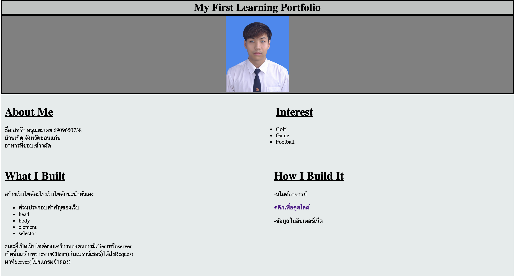

CS100 A1: My First Learning Portfolio
Type: Course Assignment
Date: 30 สิงหาคม 2569
Role: ผู้พัฒนาเว็บไซต์ด้วยตนเอง
Description: พัฒนาเว็บไซต์แนะนำตัวเองแบบหน้าเดียวในรายวิชา CS100 โดยใช้ HTML และ CSS แสดงข้อมูลส่วนตัว ความสนใจ และการสะท้อนคิดจากการทำงาน
Skills: HTML, CSS, การจัดวางหน้าเว็บ
Reflection
- What I did: สร้างเว็บไซต์แนะนำตัวเอง ใส่รูปภาพ ข้อมูลส่วนตัว ความสนใจ และตกแต่งด้วย CSS
- What I learned: เริ่มจดจำแท็ก HTML ต่าง ๆ ได้มากขึ้น จากการนำมาใช้สร้างหน้าเว็บ
- Challenge: ยังจัดหน้าเว็บให้ตรงกับที่คิดไว้ไม่ได้ จึงพยายามศึกษาเพิ่มเติมทั้งในและนอกห้องเรียน
- Next step: อยากปรับตำแหน่งองค์ประกอบและสีของเว็บไซต์ ให้ตรงกับรูปแบบที่ต้องการมากขึ้น